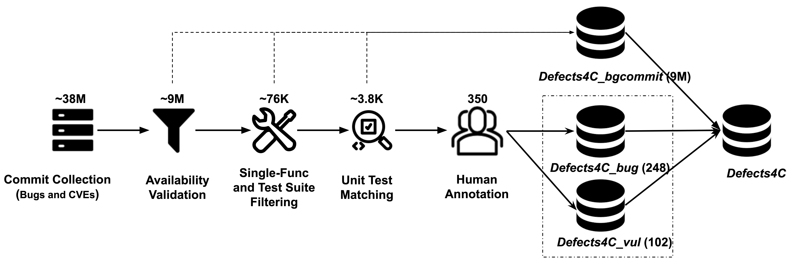
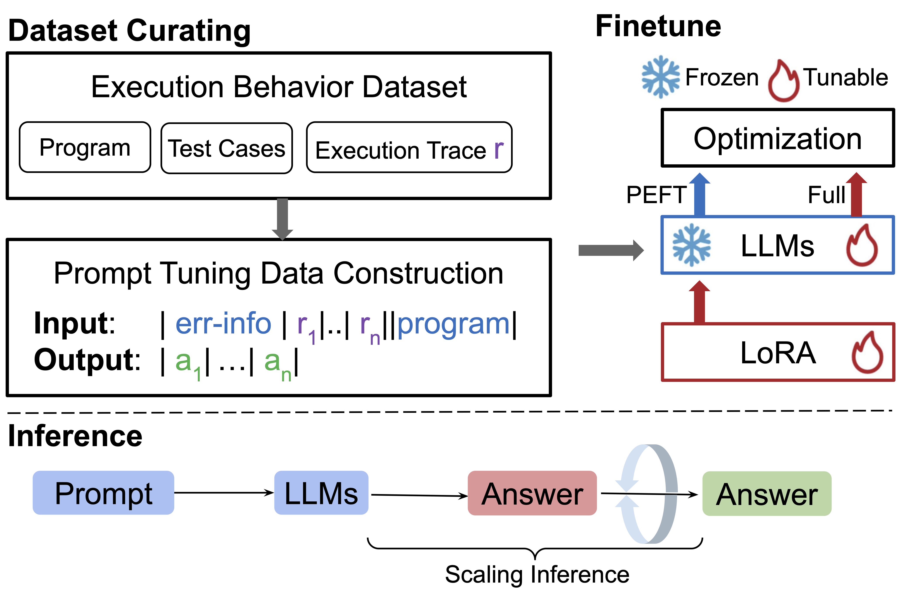
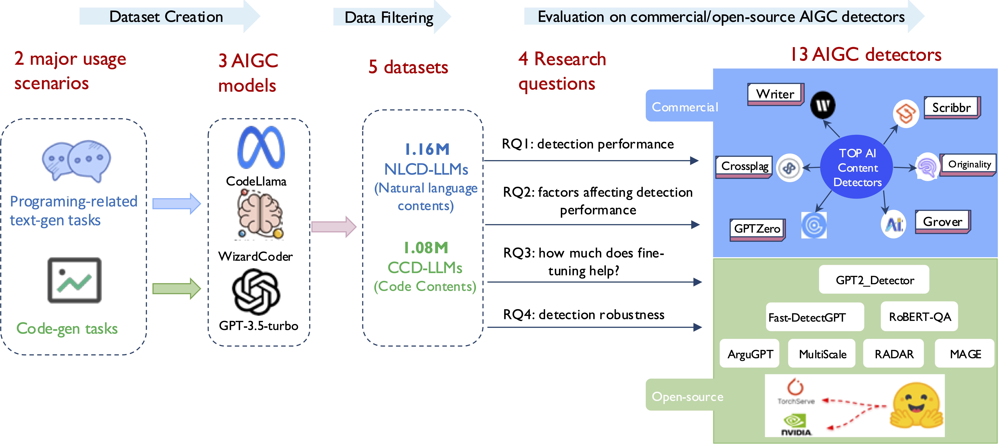

|
Jian Wang (王剑)Jian Wang is a Ph.D. candidate (expected Mar 2026, now at job market ) at the College of Computing and Data Science (CCDS), Nanyang Technological University (NTU), Singapore, advised by Prof. Li Yi. His work focuses on code LLM security and intelligence. Email / CV / Biography / Google Scholar / Twitter |

|
BioSince 2019, Jian has been a research assistant at SMU (2023-Aug - present) and NTU(2020-2023 Aug). Previously, he was a researcher at Xiaomi AI Lab and a software engineer at 58.com. He expects to receive his Ph.D. from NTU in 2026 and holds a B.A. in Software Engineering from Tianjin University (2011). Jian's research interests lie at the intersection of Software Engineering, Large Language Models, and Trustworthy AI Systems. Using deep learning and retrieval-augmented methods as the core driving engine, he develops automated techniques for program repair and AI-generated code detection, applying them toward enhancing software reliability—from identifying untrusted AI-generated code to automatically fixing bugs in safety-critical systems. He is particularly passionate about semantically grounded program understanding LLM, moving beyond pattern matching to genuine reasoning about code behavior and runtime execution. |
Research
Defects4C: Benchmarking Large Language Model Repair Capability with C/C++ Bugs
Featured
In Proceedings of the 40th IEEE/ACM International Conference on Automated Software Engineering (ASE), 2025
Program Repair
C/C++ Benchmark
LLM Evaluation
We introduce Defects4C, a comprehensive benchmark for evaluating LLM-based automated program repair capabilities on C/C++ bugs, addressing the significant gap in C/C++ repair research.

Abstract
Automated Program Repair (APR) plays a critical role in enhancing the quality and reliability of software systems. While substantial progress has been made in Java-based APR, largely facilitated by benchmarks like Defects4J, there remains a significant gap in research on C/C++ program repair, despite the widespread use of C/C++ and the prevalence of associated vulnerabilities. This paper introduces Defects4C, a comprehensive benchmark designed to evaluate and advance LLM-based automated repair techniques for C/C++ programs.
Citation@inproceedings{Wang2025DBL,
author = {Wang, Jian and Xie, Xiaofei and Hu, Qiang and Liu, Shangqing and Yu, Jiongchi and Kong, Jiaolong and Li, Yi},
booktitle = {Proceedings of the 40th IEEE/ACM International Conference on Automated Software Engineering (ASE)},
month = nov,
title = {{Defects4C}: Benchmarking Large Language Model Repair Capability with {C/C++} Bugs},
year = {2025}
}
Do Code Semantics Help? A Comprehensive Study on Execution Trace-Based Information for Code Large Language Models
In Findings of the Association for Computational Linguistics: EMNLP, 2025
Execution Traces
Code Semantics
LLM Reasoning
This paper investigates whether enriching prompts or training signals with semantic/runtime information (like execution traces) actually improves Code LLM reasoning. The study proposes a generic framework for injecting such semantics into both supervised fine-tuning and inference-time prompting, and finds that — contrary to prior claims — the gains are often limited.

Abstract
Code Large Language Models (Code LLMs) have shown impressive capabilities but still struggle to deeply reason about runtime behavior and actual program functionality. We identify two key challenges: (1) weak reasoning over program execution, and (2) inconsistent ways of representing semantic signals like execution traces, which hurts generalization. We propose a general framework for integrating semantic, trace-based information into prompts for code tasks, and we conduct a broad empirical study examining how such information affects both supervised fine-tuning (SFT) and test-time inference (post-training prompting). Surprisingly, our results challenge prior optimism: execution-trace semantic signals offer only limited benefits for SFT and test-time scaling of Code LLMs, suggesting that naive "just add traces" strategies are not enough to close LLM reasoning gaps.
Citation
@inproceedings{Wang2025DCS,
author = {Wang, Jian and Xie, Xiaofei and Hu, Qiang and Liu, Shangqing and Li, Yi},
booktitle = {Findings of the Association for Computational Linguistics: EMNLP},
month = nov,
title = {Do Code Semantics Help? A Comprehensive Study on Execution Trace-Based Information for Code Large Language Models},
year = {2025}
}
RATCHET: Retrieval Augmented Transformer for Program Repair
In Proceedings of the 35th International Symposium on Software Reliability Engineering (ISSRE), 2024
Fault Localization
Retrieval-Augmented
Deep Learning APR
Ratchet is a dual deep-learning Automated Program Repair (APR) system with (1) Ratchet-FL for fault localization using only code (no failing tests or bug reports) and (2) Ratchet-PG for patch generation using a retrieval-augmented transformer trained on historical fixes. Ratchet outperforms prior deep learning APR approaches on both localization and repair accuracy.

Abstract
Automated Program Repair (APR) aims to relieve developers from manual debugging by automatically fixing bugs. Current approaches face two core challenges: (1) fault localization frequently depends on extra artifacts (e.g., failing tests, bug reports) that may not exist early in development, and (2) seq2seq-style patch generation needs high-quality contextual hints, which are hard to obtain consistently. This paper proposes Ratchet, a dual deep-learning APR framework. Ratchet-FL locates buggy statements using a BiLSTM model directly over code, without relying on bug-triggering tests or bug reports. Ratchet-PG generates candidate patches using a retrieval augmented transformer that learns from historical fixes. Evaluations on both an in-the-lab dataset (DrRepair) and an in-the-wild dataset (Ratchet-DS) show that Ratchet achieves 39.8–96.4% localization accuracy and 18.4–46.4% repair accuracy, outperforming state-of-the-art baselines.
Citation
@inproceedings{Wang2024RAT,
author = {Wang, Jian and Liu, Shangqing and Xie, Xiaofei and Siow, Jing Kai and Liu, Kui and Li, Yi},
booktitle = {Proceedings of the 35th International Symposium on Software Reliability Engineering (ISSRE)},
month = oct,
pages = {427--438},
title = {{RATCHET}: Retrieval Augmented Transformer for Program Repair},
year = {2024}
}
Resources
An Empirical Study to Evaluate AIGC Detectors on Code Content
In Proceedings of the 39th IEEE/ACM International Conference on Automated Software Engineering (ASE), 2024
AIGC Detection
Code Security
LLM-Generated Code
This work systematically evaluates commercial and open-source AI-generated content (AIGC) detectors on code-related content from modern LLMs (GPT-3.5, WizardCoder, CodeLlama). The study reveals that detectors trained on natural language struggle with code, and that fine-tuning helps within-domain but generalization remains weak.

Abstract
Large language models (LLMs) like ChatGPT can generate high-quality code, summaries, and Q&A-style responses for software tasks. This creates both productivity benefits and new risks, including academic dishonesty and unvetted code in safety-critical settings. While many AIGC detectors have been introduced and benchmarked on natural language prose, their robustness on programming-related content is unclear. This paper conducts the first large-scale evaluation of thirteen AIGC detectors — six commercial and seven open source — on code-oriented outputs from GPT-3.5, WizardCoder, and CodeLlama. We build a dataset of 2.23M samples spanning Q&A (150K), code summarization (1M), and code generation (1.1M). Results show that current detectors generally underperform on code compared to natural language, and although fine-tuning improves within-domain detection, cross-domain generalization remains challenging.
Citation
@inproceedings{Wang2024AES,
author = {Wang, Jian and Liu, Shangqing and Xie, Xiaofei and Li, Yi},
booktitle = {Proceedings of the 39th IEEE/ACM International Conference on Automated Software Engineering (ASE)},
month = oct,
pages = {844--856},
title = {An Empirical Study to Evaluate {AIGC} Detectors on Code Content},
year = {2024}
}
Enhancing Code Vulnerability Detection via Vulnerability-Preserving Data Augmentation
Proceedings of the ACM SIGPLAN/SIGBED International Conference on Languages, Compilers, and Tools for Embedded Systems (LCTES), 2024
Vulnerability Detection
Data Augmentation
Graph Neural Networks
The authors propose FGVulDet, a fine-grained vulnerability detector that uses multiple classifiers to identify specific vulnerability types, plus a novel vulnerability-preserving data augmentation strategy to combat data scarcity. An edge-aware GGNN model captures rich code semantics and improves generalization.

Abstract
Source code vulnerability detection aims to surface exploitable weaknesses before attackers can abuse them. Many prior methods reduce this task to binary classification (vulnerable vs. not vulnerable), which ignores the diversity of vulnerability types and limits model generalization — especially under limited training data. This work introduces FGVulDet, a fine-grained vulnerability detector that (1) trains specialized classifiers for different vulnerability types and fuses them to infer the specific vulnerability category, and (2) performs vulnerability-preserving data augmentation to improve coverage for underrepresented classes. Building on recent advances in code representation via graph neural networks, we adapt and extend a Gated Graph Neural Network (GGNN) into an edge-aware GGNN that incorporates edge-type information. Trained on a large GitHub-derived dataset spanning five vulnerability types, FGVulDet outperforms both static-analysis-based and learning-based baselines.
Citation
@inproceedings{liu2024enhancing,
title={Enhancing code vulnerability detection via vulnerability-preserving data augmentation},
author={Liu, Shangqing and Ma, Wei and Wang, Jian and Xie, Xiaofei and Feng, Ruitao and Liu, Yang},
booktitle={Proceedings of the 25th ACM SIGPLAN/SIGBED International Conference on Languages, Compilers, and Tools for Embedded Systems},
pages={166--177},
year={2024}
}
Resources
Faire: Repairing Fairness of Neural Networks via Neuron Condition Synthesis
ACM Transactions on Software Engineering and Methodology (TOSEM)
Fairness Repair
Neural Network Testing
Bias Mitigation
Faire repairs unfair behavior in DNNs by identifying neurons linked to protected attributes and inserting new "condition layers" that penalize biased neurons and reward task-relevant ones — achieving >99% repair rate without requiring extra discriminatory examples.

Abstract
Ensuring fairness in deep neural networks (DNNs) is challenging because biased decision logic is often entangled with model internals. This article presents Faire, a technique to repair discriminatory behavior in DNNs efficiently and effectively — without requiring additional fairness-specific data such as curated discriminatory examples. Inspired by traditional program repair, Faire localizes unfair decision logic within the network and injects synthesized neuron-level conditions to suppress protected-attribute features and promote task-relevant features. Concretely, Faire (1) analyzes neurons to identify which ones encode protected-attribute information versus task information, and (2) inserts condition layers after each hidden layer to penalize biased neurons and amplify non-biased ones. Faire achieves over 99% repair rate and completes the repair process within a few hundred seconds, outperforming prior fairness-repair methods while maintaining utility.
Citation
@article{li2023faire,
title={Faire: Repairing fairness of neural networks via neuron condition synthesis},
author={Li, Tianlin and Xie, Xiaofei and Wang, Jian and Guo, Qing and Liu, Aishan and Ma, Lei and Liu, Yang},
journal={ACM Transactions on Software Engineering and Methodology},
volume={33},
number={1},
pages={1--24},
year={2023},
publisher={ACM New York, NY}
}
Resources
NPC: Neuron Path Coverage via Characterizing Decision Logic of Deep Neural Networks
ACM Transactions on Software Engineering and Methodology (TOSEM), vol. 31, no. 3, article 47, April 2022
Test Coverage
DNN Testing
Decision Graph
NPC models a DNN's internal decision logic as a "decision graph," analogous to a control flow graph in traditional software, and defines new path coverage criteria to evaluate test adequacy. Higher neuron path coverage correlates with error exposure (natural and adversarial) and with output impartiality.

Abstract
This article introduces Neuron Path Coverage (NPC), a set of interpretable test coverage criteria for deep neural networks (DNNs). Analogous to traditional program analysis, the approach first constructs a decision graph from a DNN by interpreting neuron behaviors; each path in this graph corresponds to a particular decision logic of the network. From this graph, two path coverage criteria are defined to measure how thoroughly a test suite exercises the network's decision behaviors. Large-scale experiments demonstrate that (1) these decision paths effectively capture how DNNs make predictions, and (2) higher NPC correlates with both the ability to surface natural and adversarial errors and the impartiality of the model's outputs.
Citation
@article{xie2022npc,
title={Npc: N euron p ath c overage via characterizing decision logic of deep neural networks},
author={Xie, Xiaofei and Li, Tianlin and Wang, Jian and Ma, Lei and Guo, Qing and Juefei-Xu, Felix and Liu, Yang},
journal={ACM Transactions on Software Engineering and Methodology (TOSEM)},
volume={31},
number={3},
pages={1--27},
year={2022},
publisher={ACM New York, NY}
}
ResourcesAutomatic RNN Repair via Model-based Analysis
International Conference on Machine Learning (ICML), 2021
RNN Repair
Model-based Analysis
Automaton
A lightweight model-based influence analysis approach to understand and repair incorrect behaviors in RNNs using automaton-based feature extraction.

Abstract
We propose a lightweight model-based influence analysis to help understand and repair incorrect behaviors of an RNN. Specifically, we build an automaton to enable high-quality feature extraction and to characterize the stateful and statistical behaviors of an RNN over all training data.
Citation
@inproceedings{xie2021automatic,
title={Automatic RNN Repair via Model-based Analysis},
author={Xie, Xiaofei and Guo, Wenbo and Ma, Lei and Le, Wei and Wang, Jian and Zhou, Linjun and Liu, Yang and Xing, Xinyu},
booktitle={International Conference on Machine Learning},
year={2021}
}
Watch out! Motion is Blurring the Vision of Your Deep Neural Networks
Advances in Neural Information Processing Systems (NeurIPS), 2020
Adversarial Attack
Motion Blur
DNN Robustness
Introducing a motion-based adversarial blur attack (ABBA) that generates visually natural motion-blurred adversarial examples to fool DNNs.
Abstract
We introduce a motion-based adversarial blur attack (ABBA) that can generate visually natural motion-blurred adversarial examples. Unlike traditional adversarial attacks that add imperceptible noise, our method exploits the natural motion blur phenomenon to create adversarial perturbations that are more realistic and harder to detect.
Citation
@inproceedings{guo2020watch,
title={Watch out! Motion is Blurring the Vision of Your Deep Neural Networks},
author={Guo, Qing and Juefei-Xu, Felix and Xie, Xiaofei and Ma, Lei and Wang, Jian and Yu, Bing and Feng, Wei and Liu, Yang},
booktitle={Advances in Neural Information Processing Systems},
year={2020}
}
FakeSpotter: A Simple yet Robust Baseline for Spotting AI-Synthesized Fake Faces
International Joint Conference on Artificial Intelligence (IJCAI), 2020
Deepfake Detection
Face Synthesis
Neuron Analysis
Detecting AI-synthesized fake faces by monitoring neuron behavior and analyzing layer-by-layer activation patterns to capture subtle features.
Abstract
Monitoring neuron behavior can help detect AI-synthesized fake faces, since layer-by-layer activation patterns may capture subtle features important for the detector. Our approach, FakeSpotter, provides a simple yet robust baseline for detecting deepfakes by analyzing the internal representations of neural networks.
Citation
@inproceedings{wang2020fakespotter,
title={FakeSpotter: A Simple yet Robust Baseline for Spotting AI-Synthesized Fake Faces},
author={Wang, Run and Juefei-Xu, Felix and Ma, Lei and Xie, Xiaofei and Huang, Yihao and Wang, Jian and Liu, Yang},
booktitle={International Joint Conference on Artificial Intelligence},
year={2020}
}
Resources |
Engineering |
- Built Defects4C: curated a C/C++ bug benchmark from 38M+ commits (500 top GitHub repos + 14.5K CVE-linked commits), down to 350 expert-validated bugs via 3 rounds of human review. (ASE 2025)
- Evaluated 24 state-of-the-art LLMs on single-round and conversation-based repair settings; analysed parallel vs. sequential scaling strategies under compute constraints.
- Designed a semantic-enhancement framework incorporating dynamic execution traces into training; conducted SFT and PEFT experiments on code generation and repair. (EMNLP 2025)
- First comprehensive study evaluating 13 AIGC detectors on 2M+ samples; developed fine-tuning-based detection with significant accuracy gains. (ASE 2024)
- Developed neural-symbolic methods for DL model testing: neuron path coverage analysis and neuron activation-level fairness repair; enhanced adversarial robustness via targeted model-internal interventions. (ICML 2021 · TOSEM 2021 & 2022 · NeurIPS 2020)
- Built RATCHET — a Retrieval-Augmented Transformer for Automated Program Repair in C/C++, integrating execution trace context and bug-patch data from 13 curated open-source projects.(ISSRE 2024)
- Core team member in an international deepfake detection challenge — 3rd place on a real-world benchmark. link 🏆 100,000 SGD Prize · 2022
- Designed and trained deep learning models (GCN / GAN / CNN) for real-time portrait background segmentation and person detection — shipped as a core camera feature on Xiaomi devices.
- Collaborated with international product teams (incl. India) to collect edge-case data and improve accuracy across diverse skin tones and lighting conditions.
-
Full production pipeline: trained on GPU cluster (CUDA / PyTorch) → quantised & pruned → converted to on-device IR → deployed and ran inference on mobile NPU (Qualcomm Hexagon DSP / HiSilicon Kirin NPU).
Train GPU (CUDA) → Quantise & Prune → Convert (ONNX / IR) → Deploy Mobile NPU → On-device Inference
- Built pre/post-launch failure-sample pipelines for continuous retraining; solved complex natural scene blur with a novel cascaded multi-mask approach (layered masks vs. single binary mask).
- Led a 7-person engineering team in the mobile web-page business group, supporting a product with 15M+ monthly active users — one of the company's primary revenue streams.
- Core developer of the middleware layer enabling API calls from mobile apps; owned service reliability, latency, and scalability at production scale.
- Managed cross-team communication, task assignment, code quality standards, and on-time delivery across multiple business units.
- Contributed to large-scale data pipelines at one of China's largest tech companies; hands-on production data engineering experience.
|
I forked this source code from jonbarron and xujuefei. Also consider Leonid Keselman's Jekyll fork of this page. |
|
ICP-1900352-1 link |
|
|